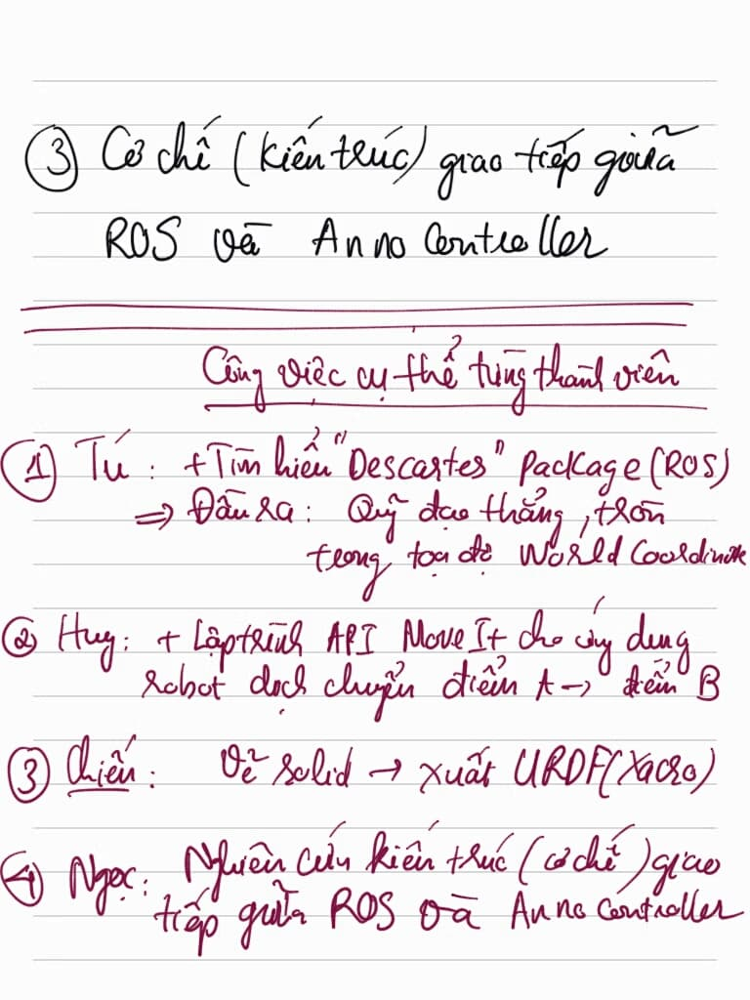
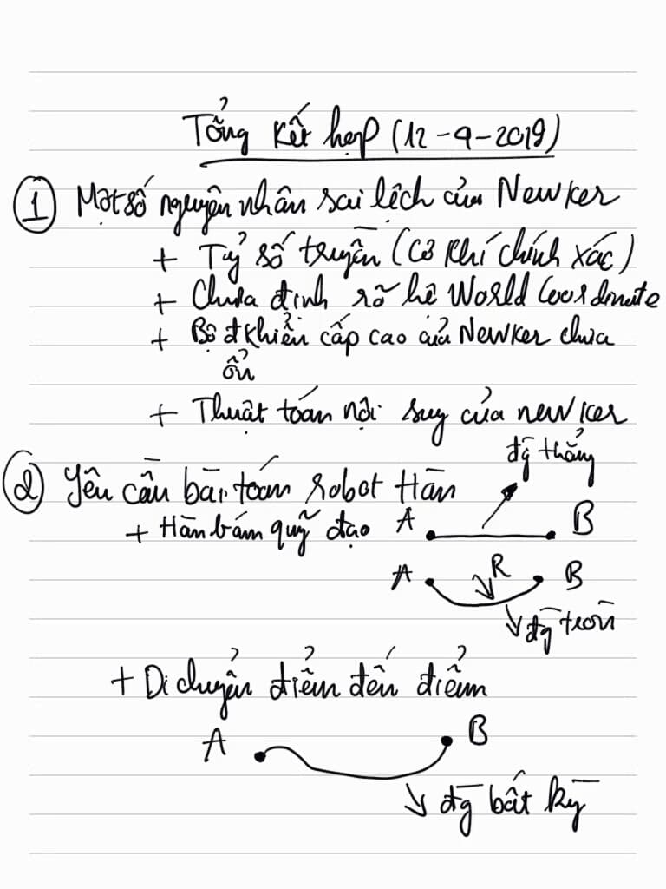
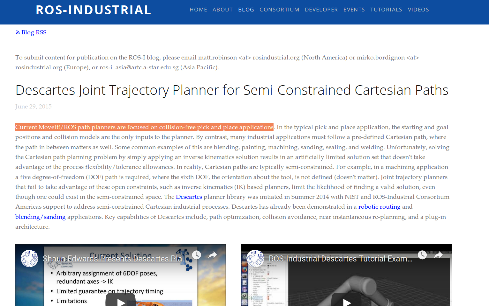

Nhật kí họp nhóm¶
Tối thứ 6 ngày 12 tháng 4 năm 2019¶
  {kind=link}
{kind=link}
{kind=link}
- 1.Anh Tú đã tìm được cách điều khiển cánh tay robot di chuyển từ điểm này đến điểm kia. Nhưng anh nói nó không di chuyển theo đường thẳng mà theo một hình bất kì nào đó miễn sao đảm nhiệm được việc chính xác 2 điểm. Anh ấy phán đoán MoveIt chỉ lập trình Point-to-Point thích hợp cho việc gặp thả vật.
Vậy câu hỏi đặt ra là muốn cho robot di chuyển theo một quỹ đạo bất kì thì sao? Anh ấy nghĩ rằng cái Descartes có thể sẽ giải quyết được vấn đề này. anh ấy cũng tìm ra được một vài dẫn chứng cho phán đoán của mình, mời các bạn click vào link ở bên dưới:
http://wiki.ros.org/descartes?fbclid=IwAR3dU4zcFKbXmugpjcrNnVnsqEGAc8toi-TE_gKisYXhVvN28mhU5QAMf-0 http://wiki.ros.org/descartes_moveit?fbclid=IwAR2D6sLNzvXBfoMTeM7rZiTZDrjVaL6jc4sLf7CdEuRmbUZG0pY3Y_ovk4Y https://vimeo.com/142622435?fbclid=IwAR18a_Fg2_qzXDTBnsPM2cnraTqKzZyBU0gM9VbRBZzLVgFO-8E9qUsg5Qo http://wiki.ros.org/descartes/Tutorials/Robot%20Welding%20With%20Descartes?fbclid=IwAR1gRm1QkpiScr1ODkOSZHcvCs5_QQsZGk1e6tcOTUbNhzkKr5DT6r0mx9E
Anh Hội có quan điểm rằng những con robot đó thường mình sẽ lập trình bằng cách dạy học. Chỉ cho nó số điểm mà nó đi qua và nó sẽ nội suy ra được đường cong hợp lý. Vì thế khả năng cao MoveIt sẽ vẫn có thể sử dụng được để bám những quỹ đạo cong nếu nó có nội quy và mình sẽ dạy nó.
Ano-phần mềm-ros sẽ được tích hợp trong một phần cứng và điều khiển robot! hướng đi là thế, ae vẫn đang cố gắng để giải quyết vấn đề.
anduino có giao tiếp được với ROS?
Nhiệm vụ của mọi người trong tuần này
Anh Tú tìm hiểu về Descartes.
Anh Huy tìm hiểu về MoveIt.
Anh Ngọc tìm hiểu về việc kết nối giữa ano-phần mềm-ros. giải quyết bài toán về việc kết nối giữa aduino và ros nữa.
Chiến viết docs, thiết kế solidworks, xuất sang urdf và add vào rviz. bổ sung thêm kiến thức về Ros.